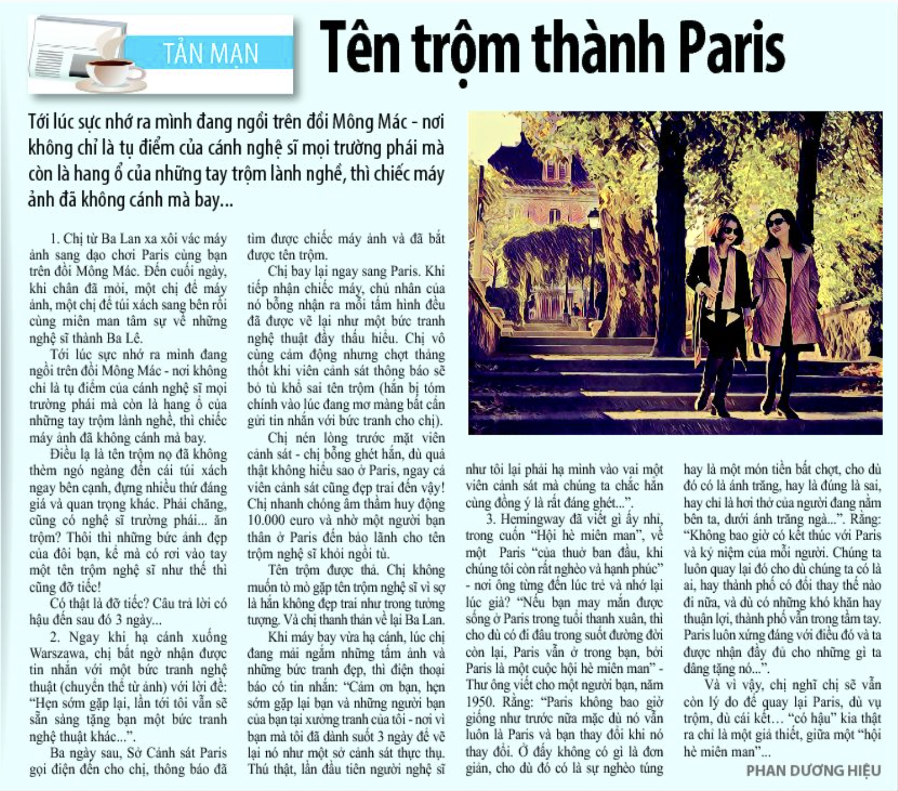

Ăn trộm vị nghệ thuật ở Paris

(dựa trên câu chuyện có thật này)
Chị TL từ Ba Lan xa xôi vác máy ảnh sang dạo chơi cùng chị HD trên đồi Mông Mác. Đến ngày cuối, khi chân hơi mỏi, một chị để máy ảnh, một chị để túi xách sang một bên rồi cùng miên man tâm sự về những nghệ sỹ thành Ba Lê.
Khi chợt tỉnh giấc nghĩ tới mình đang ngồi trên đồi Mông Mác - nơi không chỉ là tụ điểm của gánh nghệ sỹ mọi trường phái, mà còn là hang ổ của những tay ăn trộm lành nghề, thì chiếc máy ảnh đã biến mất, không còn nằm bên chiếc túi xách.
Chị Thái Linh tối đó ra về, với buồn vui lẫn lộn, tuy mất máy ảnh nhưng thằng ăn trộm đã không thèm ngó đến cái túi xách với tất cả những gì đáng giá và quan trọng của bạn. Phải chăng, cũng có nghệ sỹ trường phái ăn trộm? Thôi thì những bức ảnh đẹp của chúng mình rơi vào tay một kẻ nghệ sỹ như thế thì cũng đỡ tiếc.
Có thật là đỡ tiếc? Câu trả lời có hậu đến chỉ sau 3 ngày...
Ngay khi hạ cánh xuống Vác ça va, chị TL bất ngờ nhận được tin nhắn với một bức tranh nghệ thuật (chuyển thể từ ảnh) và lời đề "hẹn sớm gặp lại, lần tới tôi vẫn sẽ sẵn sàng tặng bạn một bức tranh nghệ thuật khác...".
Ba ngày sau, sở cảnh sát ở Paris gọi điện đến cho chị TL, thông báo đã tìm được chiếc máy ảnh và đã bắt được tên trộm, hẹn chị đến để trả lại.
Chị TL bay lại ngay sang Paris. Khi tiếp nhận chiếc máy, bỗng nhận ra mỗi tấm hình đều đã được vẽ lại như một bức tranh nghệ thuật đầy thấu hiểu. Chị vô cùng cảm động nhưng chợt tỉnh và bật khóc khi viên cảnh sát thông báo sẽ bỏ tù khổ sai tên trộm: tên trộm đã bị tóm chính vào lúc đang mơ màng bất cẩn gửi tin nhắn với bức tranh cho chị...
Chị TL nén lòng trước mặt viên cảnh sát - chị bỗng ghét hắn, dù quả thật không hiểu sao ở Paris đến viên cảnh sát cũng đẹp trai đến vậy! Chị nhanh chóng âm thầm huy động 10k euros và nhờ một người bạn thân ở Paris đến bảo lãnh cho tên trộm nghệ sỹ khỏi ngồi tù.
Tên trộm được thả. Chị không muốn tò mò gặp tên trộm nghệ sỹ vì sợ là hắn không đẹp trai như trong tưởng tượng. Và chị thanh thản về lại Ba Lan.
Khi hạ cánh, lòng yêu đời phơi phới, lúc đang ngắm những tấm ảnh và những bức tranh đẹp, chị TL nhận được tin nhắn "cảm ơn bạn, hẹn sớm gặp lại bạn và những người bạn của bạn, tại xưởng tranh của tôi - nơi vì bạn mà tôi đã dành suốt 3 ngày để vẽ lại nó như một sở cảnh sát thực thụ. Thú thật, lần đầu tiên người nghệ sỹ như tôi lại phải hạ mình vào vai một viên cảnh sát mà chúng ta chắc hẳn cùng đồng ý là rất đáng ghét."